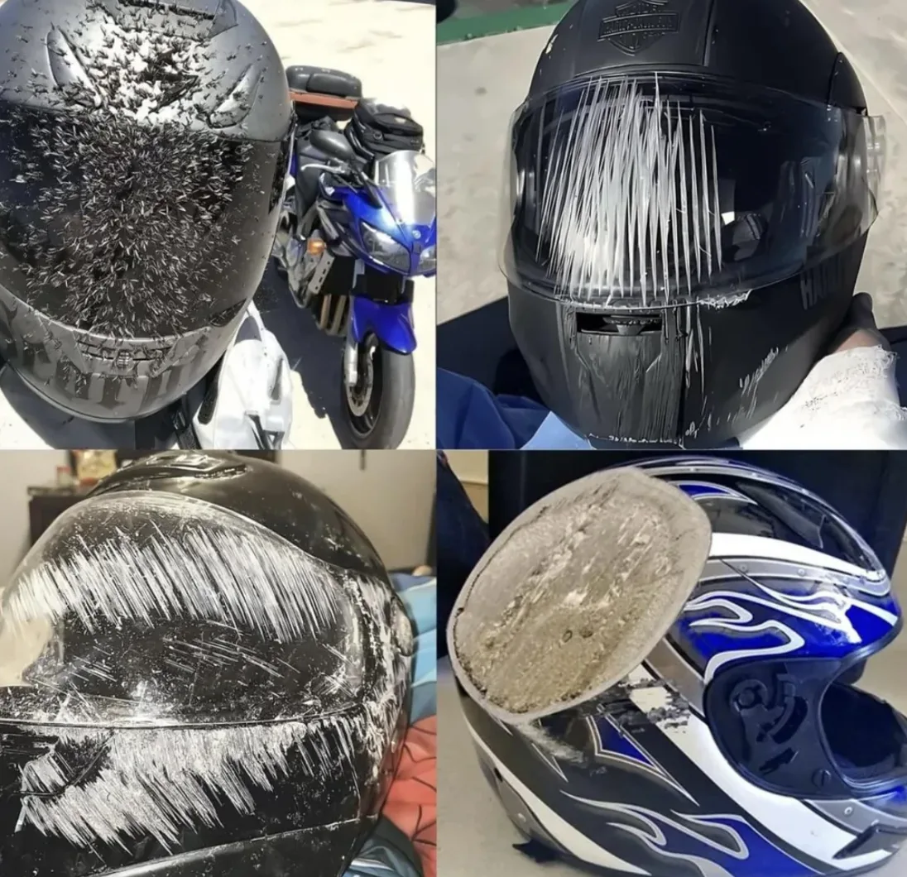
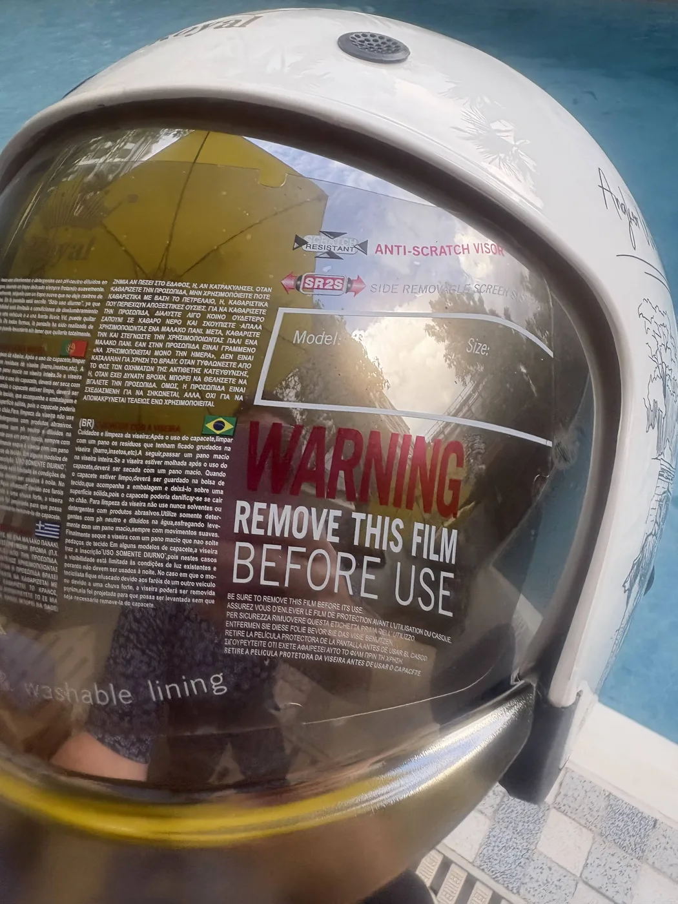
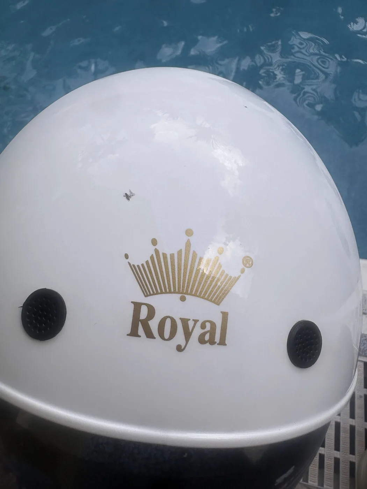
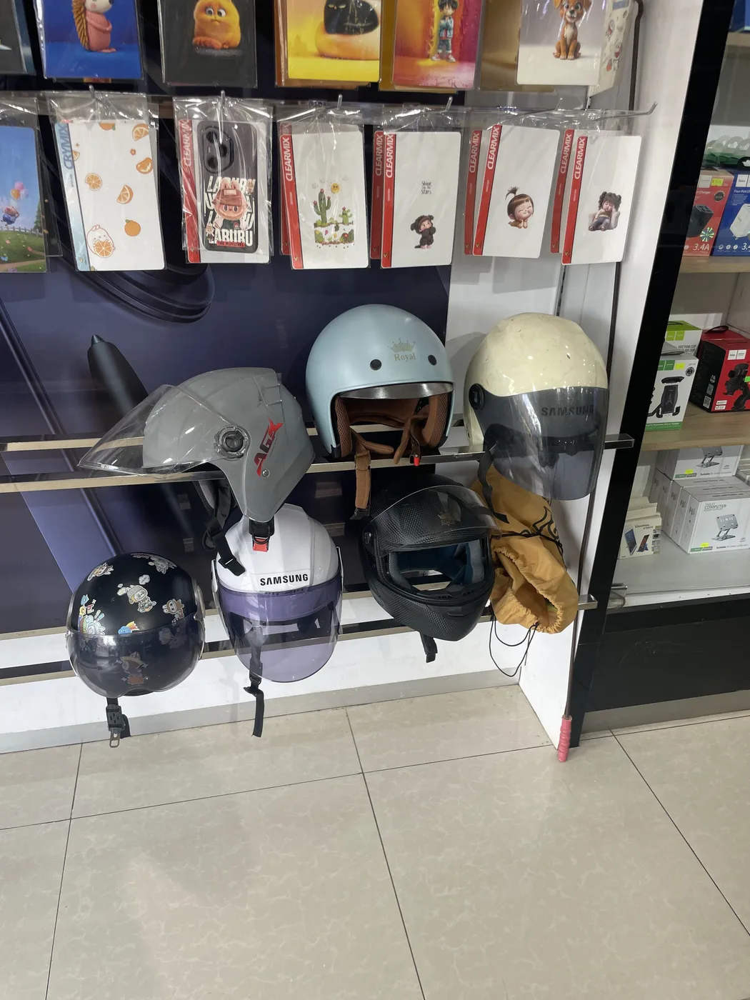
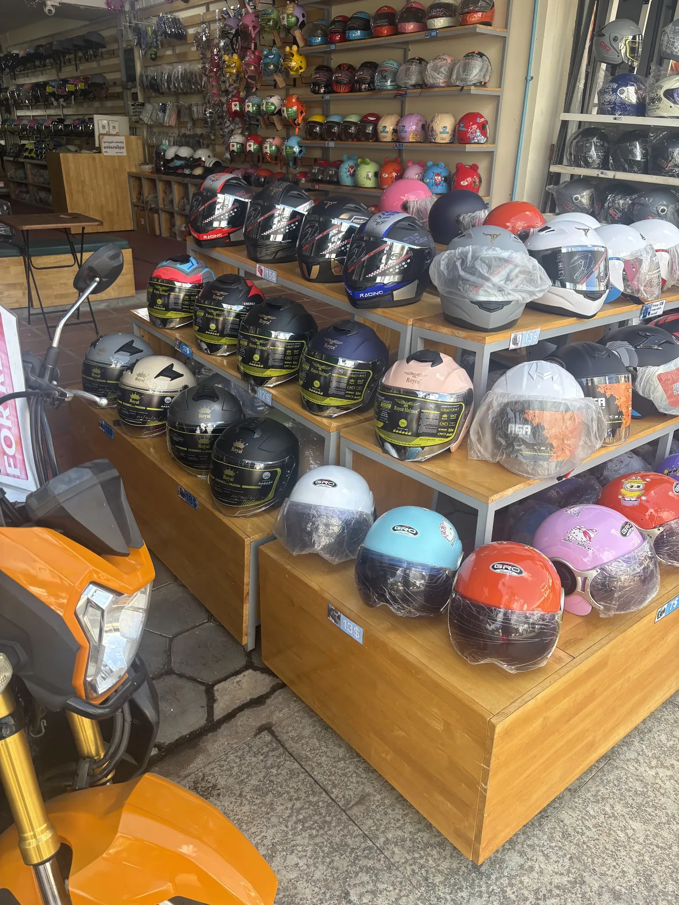

Outer shell takes the first hit
The hard shell spreads a sharp impact over a wider area and helps the helmet slide instead of snagging.
Helmet science
In a crash, the danger is not only the hard hit. It is how suddenly the head stops, twists, or scrapes across the road. A real helmet turns one violent moment into a slower, spread-out, more survivable event.
What happens in a crash
Cars have bumpers, airbags, and seatbelts. A motorcycle rider has the helmet. Its job is to manage energy before that energy reaches the skull and brain.
The hard shell spreads a sharp impact over a wider area and helps the helmet slide instead of snagging.
The EPS liner deforms like a one-use shock absorber, lengthening the stopping time for the head.
The chin strap and fit system keep the helmet from flying off before the most dangerous part of the crash.
Lower peak force and less abrasion can mean the difference between walking away and a life-changing brain injury.

The road test
The damage on a used helmet tells a simple story: the shell met the asphalt first, the visor and surface scraped instead of skin, and the helmet stayed between the rider and the road long enough to matter.
The shell and visor protect the scalp, face, and eyes from sliding contact with pavement.
The liner reduces the sudden spike of force that causes skull fracture and brain trauma.
The technology
A certified helmet is not just a plastic hat. It is a layered safety system designed to stay on, absorb force, slide on the road, and remain comfortable enough to wear every ride.

Distributes the hit, resists penetration, and helps the head slide across a rough surface.

Air channels matter because hot helmets get removed. Comfort is part of compliance.

A good strap and snug fit keep the helmet positioned over the forehead, temples, and back of the skull.

Children and adults need helmets sized for their heads. A loose helmet can rotate, lift, or come off.
Children and adults
Adults need certified protection that fits their head shape and riding speed. Children need the same crash science in a lighter, child-sized helmet they can tolerate in Cambodia's heat.
Child helmets should be lighter, correctly sized, and comfortable enough that parents do not remove them on short rides.
Adult helmets must protect at higher mass and speed, with secure retention and enough coverage for real road crashes.
After a serious crash, a helmet should be replaced. The crushed liner has already spent its protection.
Plain answers
The brain is soft tissue floating inside the skull. When the head stops suddenly, the brain can keep moving and strike or stretch inside the skull. A crushable liner gives the head a little more stopping distance and lowers the peak force.
No helmet can make a crash harmless. The goal is risk reduction: less direct impact, less scraping, lower peak force, and a better chance of avoiding fatal or disabling brain injury.
Certification means the helmet has been tested against defined impact, retention, and penetration requirements. A cheap cap can look similar but fail when the crash is real.
A helmet only protects when it is worn. In a tropical climate, ventilation, low weight, and comfort help children and adults keep the helmet on for the whole trip.